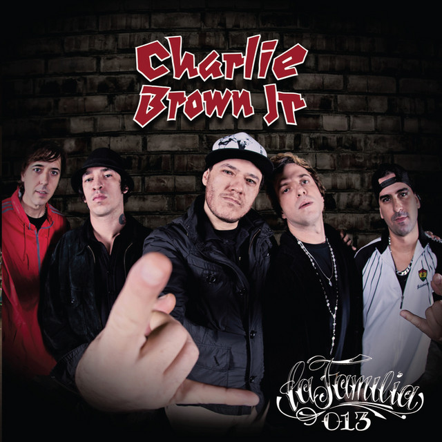
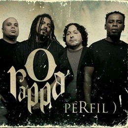

Hot chili peppers
.jpg)
Californication
First born unicorn Hardcore soft porn Dream of Californication Dream of Californication Dream of Californication Dream of Californication
Ouvir musicaCharlie Brown Jr.
A cera(me pirou o cabeção)
E o piercing dela refletia a luz do sol Os olhos dela me indicavam a direção Cabelo ao vento Meus olhos sempre atentos Aos seus movimentos Que piração Acho que é hora de uma aproximação De um diálogo sobre essa condição Essa história de pirar meu cabeção Meu cabeção..
Ouvir musicaO Rappa
Anjos "pra quem tem fé"
Em algum lugar, pra relaxar Eu vou pedir pros anjos cantarem por mim Pra quem tem fé, a vida nunca tem fim Não tem fim, é
Ouvir musicaCosta Gold
Posfácio
E se a certeza de um caboclo, acabou Tava num calo que calejou Cara, go go go! Vai joe! Esse tempo não para, péra! Vim de onde você faz por onde Ou ajoelha e reza E vai achar pai nosso uma hora dessas São paulo a febre da selva Toxina, a maldade das perva Puta que mente de frente Gemendo na cama e mandando uma névoa! Efeito domino, epifânico
Ouvir musica